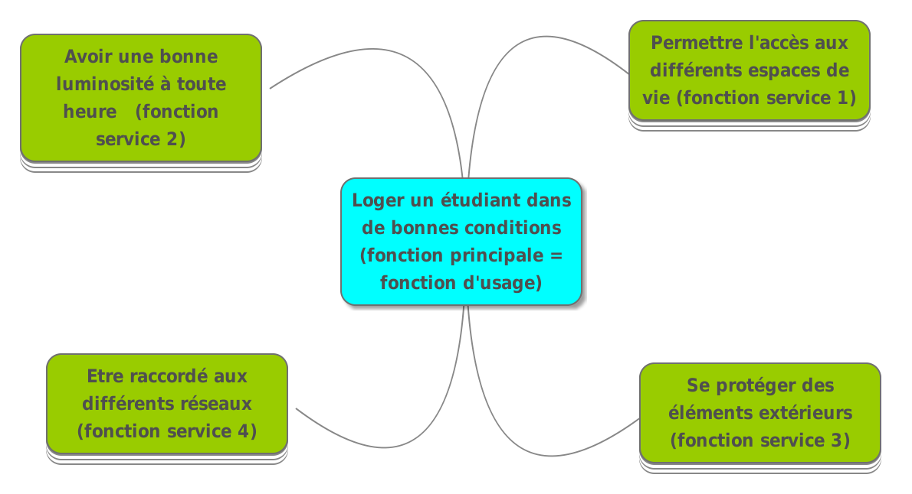
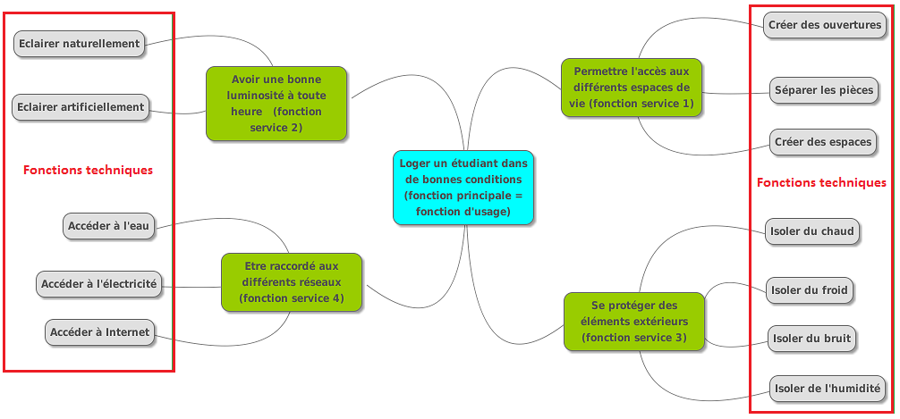

séance 3: Fonctions et solutions techniques
Nous venons de voir que la fonction principale du conteneur ( = sa fonction d'usage) est :
Permettre de loger un étudiant dans de bonnes conditions.
Que se passe-t-il ?
Observer cette image :

Quel est le problème à résoudre ?
problème retenu
Comment rendre le conteneur habitable ?
Quelles sont vos hypothèses pour résoudre ce problème ?
Hypothèse retenu
Le conteneur doit permettre à un étudiant de :
se reposer
travailler
cuisiner
se laver
recevoir ses amis.
Activité 1 : Trouver les fonctions techniques
Votre équipe d'architectes doit imaginer les fonctions techniques que va devoir posséder le conteneur pour devenir parfaitement habitable. Pour l'instant, c'est juste une boîte en métal !
TRAVAIL DU GROUPE
- Faire une liste de toutes les fonctions techniques.
ATTENTION : Une fonction commence toujours par un verbe : Permettre de …………………………… , Avoir …………………………… , S'isoler
Essayer de regrouper les fonctions techniques que vous avez trouvées par thème ou par ressemblance.
Donner un titre au regroupement.
Coup de pouce
Si vous avez besoin d'aide ... Quelques idées de fonctions techniques...
Avoir suffisamment de lumière.
Pouvoir s'isoler du bruit...
Restitution
Voici 4 fonctions que nous retenons qui permettent de satisfaire la fonction principale (fonction d'usage) : Loger un étudiant dans de bonnes conditions.
(Rappel : Une fonction commence toujours par un verbe à l'infinitif : permettre de..)

Le conteneur doit :
Permettre l'accès aux différents espaces de vie.
Avoir une bonne luminosité quelque soit l'heure.
Se protéger des éléments extérieurs.
Etre raccordé à différents réseaux.
Ces 4 fonctions sont appelées des fonctions de service.
L'architecte les a trouvées en se posant la question : "Comment rendre le container habitable ? Quels services doit-il rendre à l'étudiant ?"
Ensuite, l'architecte doit réfléchir précisément à l'aménagement intérieur du conteneur. Pour bien comprendre ce qu'il doit concevoir, il va détailler chacune des fonctions de services.
Il imagine donc des fonctions plus précises qui sont les fonctions techniques.

🧠 Teste tes connaissances
Réponds aux questions puis clique sur « Vérifier » — la correction s'affiche aussitôt.
1. Quelle est la fonction principale (fonction d'usage) du conteneur ?
2. Comment appelle-t-on les 4 fonctions retenues qui satisfont la fonction principale ?
3. Par quoi une fonction commence-t-elle toujours ?
4. Parmi ces propositions, laquelle est une des 4 fonctions de service retenues ?